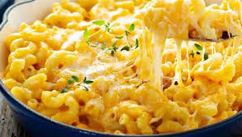

Macarrones con Queso

Descripcion
Plato de macarrones con queso rápido, fácil y sabroso. Los elegantes macarrones con queso de diseño a menudo cuestan cuarenta o cincuenta dólares
para preparar cuando tienes tantos quesos caros, pero no siempre tienen el mejor sabor. Esta sencilla receta es barata y sabrosa.
Ingredientes
- caja (8 onzas) de macarrones con codo
- ¼ taza de mantequilla
- ¼ taza de harina para todo uso
- ½ cucharadita de sal
- pimienta negra molida al gusto
- 2 tazas de leche
- 2 tazas de queso cheddar rallado
Pasos a Seguir
- Cosina los Macarrones
- Prepara el queso
- Vierte el queso sobre los macarrones
- Sirve Caliente